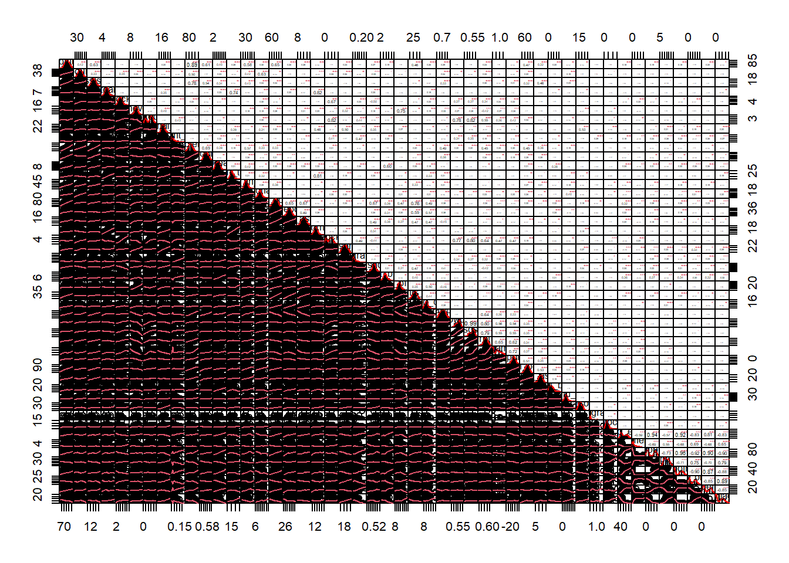
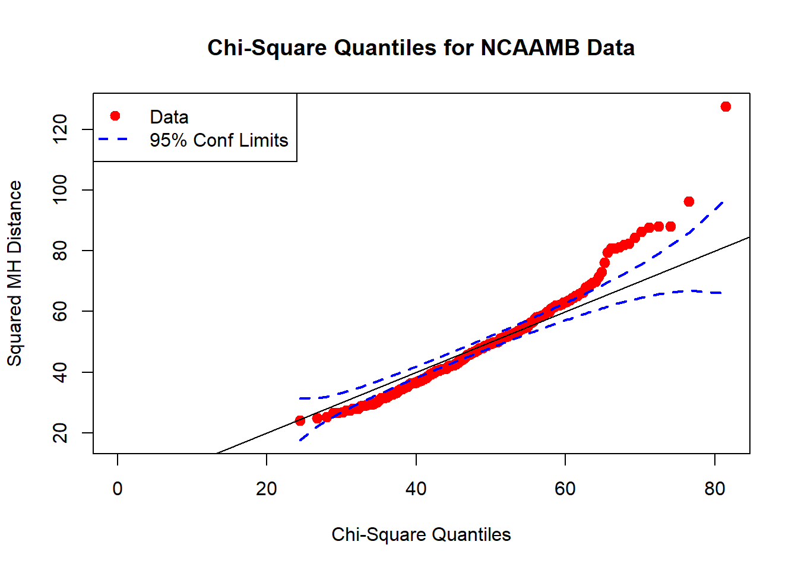

Before completing any specific multivariate analysis, we will do some initial analysis of our data’s properties. We will first consider the distributions of our variables, looking at pairwise relationships and multivariate normality. Then, we will look at some basic summary statistics about each variable (mean, standard error, minimum, maximum). Notably, each of these analyses will filter out non-numeric variables such as team name and conference, as well as categorical variables like seed.
As the first check of the validity of our data, we use a large plot of linearity, correlations, and histograms. This will allow us to gauge whether we need to transform any of our variables to achieve normality and linearity (useful in PCA, factor analysis, etc.) We already applied a logarithmic transformation to the number of tournament games played (a naturally logarithmic indicator due to the tournament structure). And otherwise, we see almost all linear or cloud-like relationships, verifying that no further transformations are needed for our multivariate techniques. Furthermore, the histograms of the variables themselves (on the diagonal elements) seem relatively normal, a good sign for the multivariate normality of our total data.

Making a chi-squared quantile plot, our data appears to follow an approximately multivariate normal distribution. There is some deviation for the larger quantiles, but this is mostly due to the tournament variables (removing them increases the normality—probably due to the small sample size of tournament games). We don’t use these variables in many of our analyses, especially those that require normality, so our data should work well for any of the following methods. 
Now, to get a holistic view of our variables individually, we will look at the following summary table, which lists their mean, standard error, minimum, and maximum among all of the 271 teams. Looking at the results, we see quite obviously that they fall on substantially differing scales. For example, adjusted winning percentage (awp) will only take values between 0 and 1, while points typically takes values between 60 and 90. We can see this more concretely by looking at the standard errors, which vary from as low as 0.003 for RPI and strength of schedule to as high as 0.456 for efficiency. Therefore, we definitely want to standardize our data before completing any analysis sensitive to scale (e.g. cluster analysis).
| mean | se | min | max | |
|---|---|---|---|---|
| points | 75.63 | 0.3048 | 61.5 | 87.6 |
| rebounds | 33.49 | 0.148 | 26.66 | 40.5 |
| assists | 14.43 | 0.1051 | 10 | 19.5 |
| steals | 6.542 | 0.06952 | 3.76 | 10.74 |
| blocks | 3.952 | 0.06105 | 1.57 | 7.79 |
| turnovers | 12.03 | 0.07599 | 7.43 | 16.69 |
| blocked_att | 2.361 | 0.07282 | 0.17 | 5 |
| personal_fouls | 17.66 | 0.1103 | 12.53 | 24.06 |
| flagrant_fouls | 0.03642 | 0.002847 | 0 | 0.24 |
| efficiency | 84.93 | 0.4556 | 67.17 | 110.4 |
| true_shooting_pct | 0.5655 | 0.001456 | 0.498 | 0.628 |
| fast_break_pts | 7.387 | 0.1566 | 2.29 | 16.67 |
| points_off_turnovers | 15.3 | 0.1479 | 9.97 | 25.66 |
| points_in_paint | 31.41 | 0.235 | 21.07 | 49.34 |
| second_chance_pts | 11.2 | 0.1179 | 6.03 | 19.89 |
| opp_points | 67.55 | 0.3174 | 54 | 81.7 |
| opp_rebounds | 30.34 | 0.1456 | 23.76 | 37.06 |
| opp_assists | 12.06 | 0.09512 | 7.7 | 16 |
| opp_turnovers | 13.05 | 0.1044 | 8.94 | 20.03 |
| opp_blocked_att | 2.877 | 0.1082 | 0.14 | 7.79 |
| opp_personal_fouls | 18.67 | 0.09543 | 15 | 22.87 |
| opp_flagrant_fouls | 0.04413 | 0.003205 | 0 | 0.29 |
| opp_true_shooting_pct | 0.5186 | 0.001374 | 0.439 | 0.582 |
| opp_fast_break_pts | 5.644 | 0.1072 | 2.06 | 11.76 |
| opp_points_off_turnovers | 12.6 | 0.1141 | 7.83 | 21.47 |
| opp_points_in_paint | 27.27 | 0.219 | 18.41 | 37.49 |
| opp_second_chance_pts | 9.869 | 0.09684 | 6.82 | 17.75 |
| awp | 0.7116 | 0.006319 | 0.4941 | 0.9718 |
| owp | 0.5453 | 0.003169 | 0.3778 | 0.6693 |
| sos | 0.5385 | 0.002647 | 0.402 | 0.6357 |
| rpi | 0.5817 | 0.002587 | 0.4412 | 0.6823 |
| log_tourn_games_played | 0.5223 | 0.03461 | 0 | 1.792 |
| tourn_point_diff | -4.265 | 0.6247 | -39 | 20.7 |
| tourn_points | 68.89 | 0.5562 | 44 | 91 |
| tourn_assists | 12.02 | 0.1901 | 3 | 22 |
| tourn_fast_break_pts | 6.539 | 0.3035 | 0 | 24 |
| tourn_second_chance_pts | 10.51 | 0.2752 | 0 | 36 |
| tourn_personal_fouls | 17.96 | 0.2268 | 10 | 33 |
| tourn_flagrant_fouls | 0.07148 | 0.01508 | 0 | 2 |
| tourn_blocked_att | 3.665 | 0.1182 | 0 | 15 |
| tourn_opp_efficiency | 58.46 | 1.46 | 19 | 118 |
| tourn_opp_field_goal_pct | 1.747 | 0.1108 | 0 | 9 |
| tourn_opp_points | 42.16 | 1.912 | 2 | 95 |
| tourn_opp_assists | 18.13 | 0.4056 | 4.5 | 34 |
| tourn_opp_points_in_paint | 15.28 | 0.9433 | 0.343 | 50 |
| tourn_opp_blocked_att | 10.15 | 0.4616 | 0 | 27 |
| tourn_opp_personal_fouls | 10.33 | 0.4252 | 0 | 25 |
| tourn_opp_flagrant_fouls | 5.433 | 0.3544 | 0 | 20 |